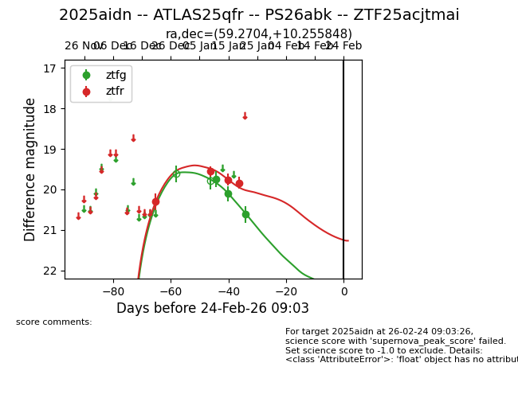
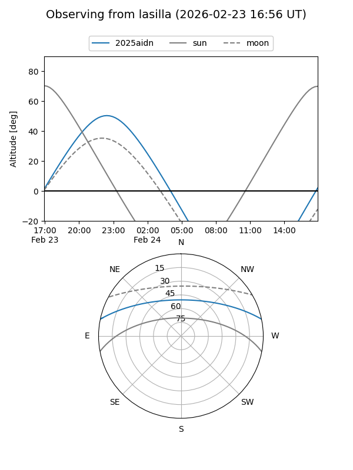
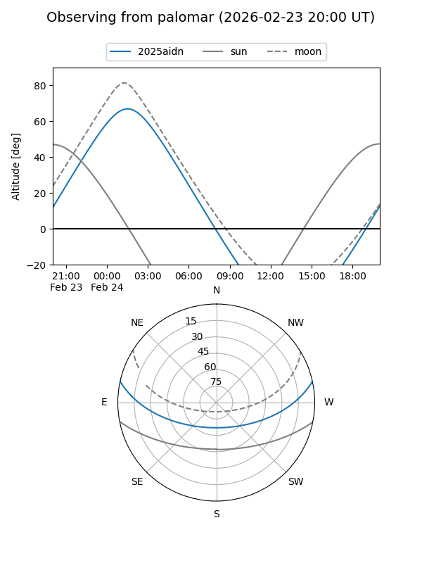
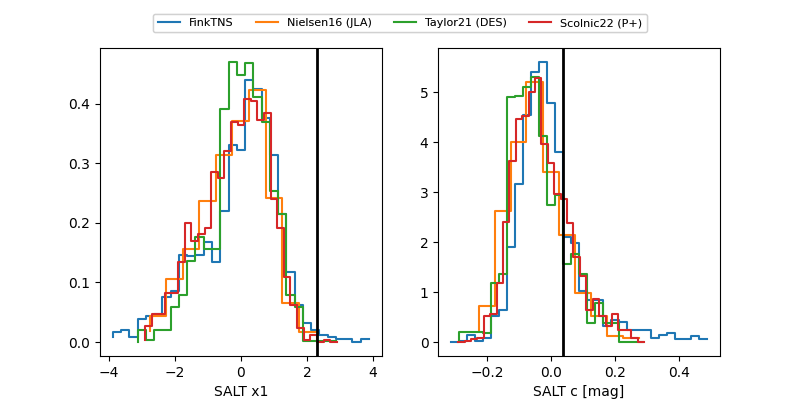

2025aidn
Target 2025aidn at 2026-01-09 05:50
Aliases and brokers:
FINK:
Lasair:
ALeRCE:
TNS:
YSE:
alt names
ZTF25acjtmai (ztf,fink_ztf)
2025aidn (tns,yse)
ATLAS25qfr (atlas)
Coordinates:
equatorial (ra, dec) = 59.2704,+10.25578
equatorial (HMS+DMS) = 03:57:04.90,+10:15:20.82
galactic (l, b) = (179.6517,-31.50960)
Flags:
Photometry:
last ztfr=19.55
2 ztfr detections
Lightcurve

Visibility


Additional plots
